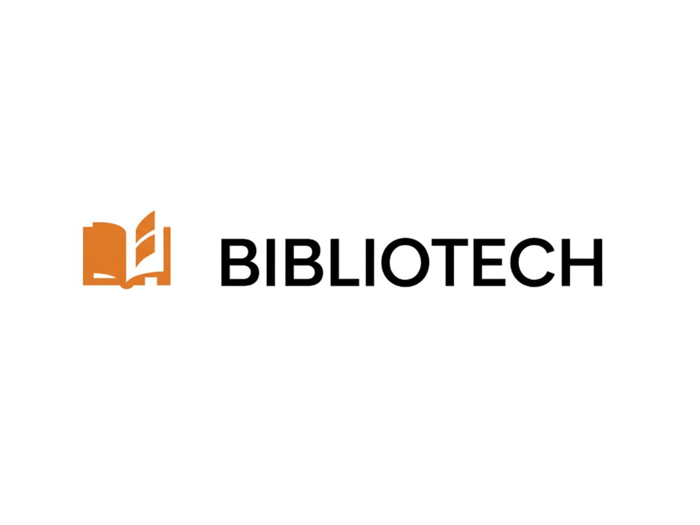

Todos os meus projetos.
Uma seleção completa dos meus trabalhos técnicos, aplicações web e desenvolvimentos acadêmicos.
Ciclo
Web AppPlataforma web informativa focada na conscientização sobre a violência contra a mulher, detalhando o "Ciclo da Violência" e redes de apoio.
HTML5
CSS
JavaScript

Bibliotech
Sistema WebSistema de gerenciamento de biblioteca voltado para otimizar o controle de acervos, empréstimos de livros e cadastros de usuários de forma prática.
HTML5
CSS
JavaScript
autorenew
Mais projetos em desenvolvimento...
Estou sempre codando, explorando novas tecnologias e construindo novas soluções. Volte em breve para conferir as novidades!